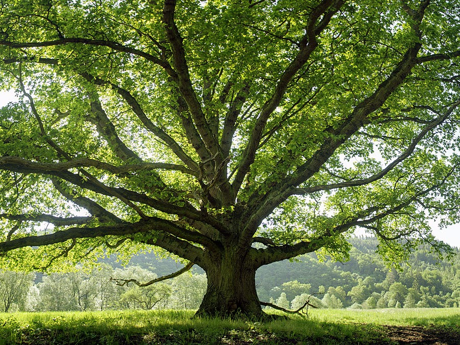

ABINAYA SRIKANT
all you need to know...
ABOUT ME

My name is Abi and I'm a rising junior at Lynbrook High School in San Jose, California. I'm excited to learn how to code!



Here's a screenshot of a side-scroller game that I recently created with a partner on Scratch. The mermaid swims through the ocean, trying to avoid obstacles to score points!
Using python, I created a filter that modifies pictures. This is done by categorizing the pixels in the original image using the RGB values. Then, it converts pixels in each category to a different color. In this case, the pixels are converted to either dark blue, light blue, red, or yellow.
I love...
♡Dancing
♡Art
♡Music
♡DECA
Not a fan...
💔Running
💔Mushrooms
💔Frizzy hair
FUN FACT:
I have a strange obsession with croutons.